Refugio de Mascotas culolasio
Animales en situacion de calle en busca de sus nuevas familias
En caso de querer registrar a su mascota y/o realizar donaciones al refugio contactarse en las seccion de contacto.
Perritos en adopción
-
Falucho
Sexo:Macho, Edad: 4 años(aproximadamente), Tamaño: Mediano.
Calmado y cariñoso, le gusta descasar sobre las sillas y hacer compañia.
-
Hilberta

Sexo:Hembra, Edad: 2 año(aproximadamente), Tamaño: Pequeño.
Activa, juguetona y cariñosa,le gusta correr y morder cosas.
-
Stuart
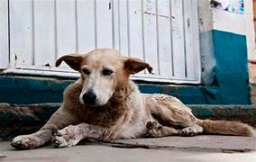Sexo:Macho, Edad: 8 años(aproximadamente), Tamaño: Mediano/Grande.
Cariñoso y haragan,tiene problemas de vision,le gusta mucho los cariñitos.
-
Tristri
Sexo:Hembra, Edad: 1 año(aproximadamente), Tamaño: Pequeño.
Juguetona y amistosa,es muy sociable con los demas perros.
-
Destructor de mundos jr
Sexo:Macho, Edad: 4 meses(aproximadamente), Tamaño: Muy pequeño.
Timido y reservado,le gusta el pan con leche.
-
Pichin
Sexo:Macho, Edad: 2 año(aproximadamente), Tamaño: Pequeño/Mediano.
Activo, jugueton y muy cariñoso,fanatico #n1 del pan duro.
Gatitos en adopción
-
Rosa
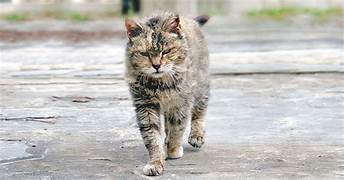Sexo:Hembra, Edad: 3 años(aproximadamente), Tamaño: Mediano/Grande.
Malhumorada y dormilona,le gusta las caricias en las patas delanteras.
-
Melissa
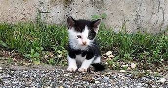Sexo:Hembra, Edad: 2 meses(aproximadamente), Tamaño: Muy pequeño.
Cariñosa y llorona,le falta un colmillo y parte del pelaje de su lomo.
-
Aurelio
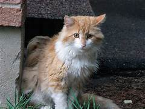Sexo:Macho, Edad: 2 años(aproximadamente), Tamaño: Mediano.
Timido con extraños,suele ocultarse sobre muebles hasta entrar en confianza.
-
Wilfrido
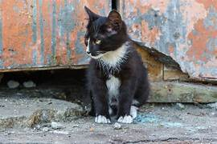Sexo:Macho, Edad: 4 meses(aproximadamente), Tamaño: Mediano/Pequeño.
Curioso,le tiene miedo a las gallinas.
-
Alfa
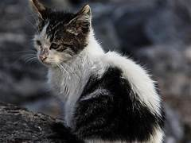Sexo:Macho, Edad: 5 meses(aproximadamente), Tamaño: Pequeño.
Desconfiado,agresivo con otros gatos,tiene problemas de audicion.
-
Mara
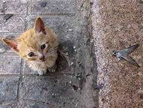Sexo:Hembra, Edad: 2 meses(aproximadamente), Tamaño: Muy pequeño.
Delgada y delicada,muy confiada con niños pequeños.Muy jueguetona.
Cómo adoptar
Para adoptar un perrito o gatito, debes seguir los siguientes pasos:
- Visita nuestra página web y elige al perrito o gatito que deseas adoptar
- Envianos un correo electronico/mensaje con los siguientes datos.
Datos a dar para adoptar:
- Nombre completo.
- Edad.
- Domicilio.
- Especificar si existen otros animales en el domicilio.
- Firma de tutor(en caso de ser menor de edad)
Contacto
Teléfono: 1155878945
Correo electrónico: refugioculolasio@gmail.com
Alias:nahiua (mercadopago)
-
Juan
-
Luli
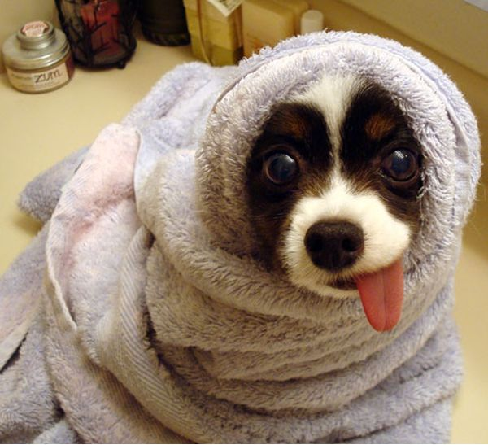 -
Hector
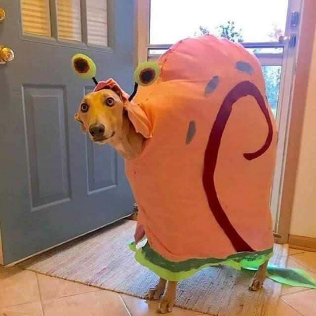 -
Ines
-
Leblac
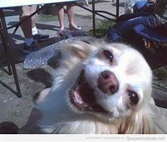 -
Esteban
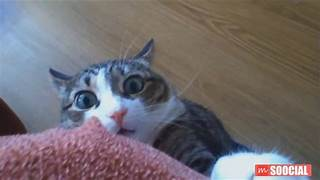 -
Jose
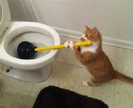 -
Alberto
-
Loqui
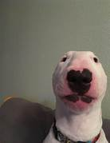
Antiguos residentes del refugio culolasio
fotos de los antiguos residentes en sus nuevas casas.